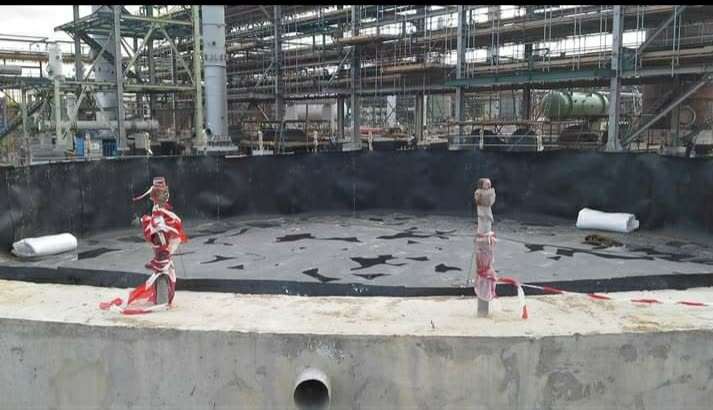
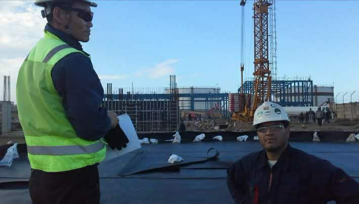
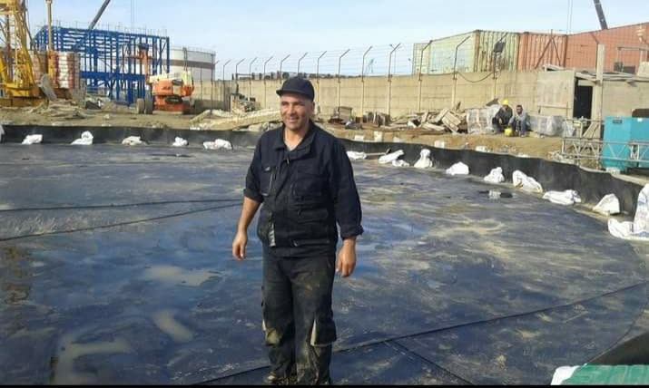

Rétentions sous bacs de stockage
Étanchéité du fond et des talus des cuvettes de rétention, pour contenir une fuite ou un débordement de bac. Les pieds de bac et les traversées de tuyauteries font l’objet de raccordements étanches.

Confinement de fluides agressifs.
Étanchéité des ouvrages qui reçoivent ou peuvent recevoir des hydrocarbures et des produits chimiques.

Acteur de référence dans les secteurs de l’industrie et du pétrole, ALGRN Solutions apporte des solutions technologiques avancées pour le confinement des fluides agressifs.
Hydrocarbures, acides, bases : une fuite ou un déversement accidentel ne doit jamais atteindre le sol ni les nappes. Nous concevons, fournissons et posons des systèmes d’étanchéité dont les matériaux sont sélectionnés en fonction des fluides à confiner.
Nos équipes interviennent dans le respect des procédures de sécurité strictes des sites industriels et pétroliers.

Étanchéité du fond et des talus des cuvettes de rétention, pour contenir une fuite ou un débordement de bac. Les pieds de bac et les traversées de tuyauteries font l’objet de raccordements étanches.
Étanchéité des aires de chargement et de déchargement des camions-citernes, pour recueillir les égouttures et les déversements accidentels avant qu’ils n’atteignent le sol.
Confinement des effluents et des produits chimiques. Le matériau est choisi en fonction de la nature des fluides, de leur concentration et de leur température.

Étanchéité des bourbiers qui reçoivent les boues et les déblais de forage, pour isoler ces rejets du sol et des nappes.

La composition exacte est définie pour chaque ouvrage, selon les fluides, les volumes et les contraintes du site. Un complexe courant associe, de la surface vers le sol :
En crête de talus, la géomembrane est ancrée dans une tranchée remblayée.
Sélection de matériaux testés pour leur durabilité face aux agressions des hydrocarbures, des acides et des bases.
Contrôle des soudures double piste par test de pression d’air, étincelage ou ultrasons, avec une traçabilité complète.
Équipes qualifiées et formées aux procédures de sécurité strictes des sites industriels et pétroliers : habilitations spécifiques, protocoles d’accès, équipements de protection individuelle avancés.






Décrivez-nous votre ouvrage : nous vous proposons la solution technique adaptée.